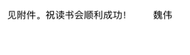

我们请到了社会学学者和你一起读《公开》 | MOTSS读书会No.3
多元×健康×平等=
酷儿论坛
10月23日
酷儿论坛

motss2002
杭州酷儿论坛（motss.info）致力于为杭州及周边地区学生性少数人群提供一个多元、健康、平等的环境，促进自我认同和社会认可。

你是否产生过这样的疑问——
•
中国语境下的“同性恋”有何特殊性？传统性别文化又如何影响了中国同性恋社群的文化地方性？
•
“母零”“铁T”等称谓究竟从何而来，又反映出了什么样的性别文化和社会心态？
•
为何公园往往会成为早期同志交友的场所？后期又渐趋衰落？
•
茶馆如何成为成都同志“现身”（come out）的场所？
•
同志如何利用全球化的“同性恋”身份，在城市当中“现身”，并开创出自己的生存空间和交往空间？
/ 基 本 内 容 /
在同志这个圈子里，自我身份、城市空间、人际交往、家庭关系、公益行业与转型期的中国命运复杂地交织缠绕在一起。而这本书，则以详实的故事和新颖的视角为我们提供了一种可能的思路。
作者魏伟是华东师范大学社会学院的教授，他本身就是一位男同性恋。这本书改编自他的博士论文，讲的是在他的家乡——四川成都这个地方，同志如何生存、彼此相处，与家庭、社会、政府展开各式各样的互动，构成了社群中丰富的群像。
作为一本覆盖面广且具有前瞻性的民族志，尽管此书成书于6年前，但许多当今同志社群热烈讨论的问题依然能从书中获得灵感，比如圈内的“名媛”现象，又比如传统同志空间的变迁（从公园到茶馆到酒吧——直到现在的虚拟线上赛博空间？），绝对值得充满好奇心和探索欲的你一读！
/ 阅 读 要 求 /
魏伟：《公开：当代成都“同志”空间的形成和变迁》，上海三联书店。
•
基础阅读要求：第二章-第六章
•
建议有精力阅者读全书
•
点击文末【阅读原文】获取电子书全文资源
/ 活 动 流 程 /
一、学者导读（15-20min）
这次我们特别邀请到了一位社会学学者（姓名暂时不公布）为读书会进行导读，以及在活动最后统一评述大家的观点~
二、分享者发言（20-30min）
提前确定1-3位发言者，每人依次发言3-5分钟，每人分享内容结束后可进行3-5分钟的提问和回答。建议发言内容围绕阅读文本展开，同时加入个人对特定问题的延伸思考和经验分享，可根据分享内容需要准备幻灯片和文本材料（不是必须要求）。
三、讨论与自由发言（60min）
根据之前分享者的内容确定几个话题，并进行讨论，分享讨论结果和阅读感受。
/ 活 动 时 间 /
11月3日（周六）18:15-20:30
/ 报 名 方 式 /
本次活动收取报名费10元，用于支持本项目的基本开支和组织运营。
如果你想在第二个环节发言，请在报名表中勾选相关选项。
因场地限制，本次活动限定15人左右，请尽快填写报名表，此外，若人数超出限制，我们会优先选择自愿分享的报名者。
扫描下方二维码填写报名表。
/ 支 付 方 式 /
扫描下方二维码，向酷儿论坛官方支付宝账号转账10元，备注【姓名+读书会】。
报名表和转账为有效报名的两个条件，我们会根据收到报名费来确认报名~
报名金额不予退还，但名额可以转让，如不能到场，请至少提前一天告知~
阅读原文获取《公开》电子书资源
( 或从浏览器中打开 https://pan.baidu.com/s/1op1LEQLkrcKkbQ-vrs9Vpw )
提取码: gi8h
（在此感谢魏伟教授提供的电子书资源）

长按二维码向我转账
“”

受苹果公司新规定影响，微信 iOS 版的赞赏功能被关闭，可通过二维码转账支持公众号。
微信扫一扫
关注该公众号
关注该公众号
使用小程序